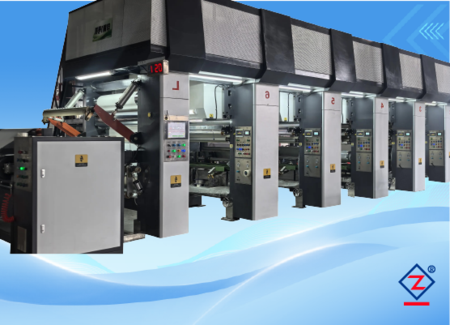
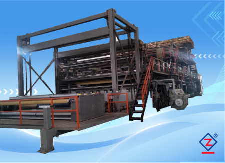

Máy cán màng, máy in ống đồng và thiết bị ngành nhựa dạng cuộn
Chọn dòng máy theo vật liệu, công đoạn sản xuất, khổ rộng, tốc độ và yêu cầu thành phẩm của nhà máy.

Máy in ống đồng trục điện tử
Cho PVC, PP, giấy melamine và vật liệu trang trí nhiều màu.

Máy in trục cơ
Giải pháp in ổn định cho dây chuyền sản xuất truyền thống.

Máy cán màng công nghiệp
Cho màng PVC, vật liệu nội thất, tấm trang trí và bề mặt giả gỗ.

Máy ghép đa chức năng
Dùng cho nhiều lớp vật liệu và yêu cầu quy trình linh hoạt.

Máy ghép bạt hộp đèn khổ lớn
Thiết bị ghép khổ rộng, tối đa theo cấu hình dự án.
Máy ghép và phủ bạt kỹ thuật
Cho PVC, vải lưới, vải dệt, bạt chống nước và vật liệu quảng cáo.
Dây chuyền ghép UV cho sàn nhựa cuộn
Cho sàn thể thao, sàn thương mại, PVC và màng sợi thủy tinh.
Dây chuyền ghép xốp UV cho sàn nhựa cuộn
Cho sàn xốp, sàn dân dụng, sàn thương mại và xử lý tạo xốp.

Máy phủ keo vi lõm
Cho phủ keo, phủ bề mặt và ghép lớp trong sản xuất liên tục.

Máy cuộn trung tâm màng PVC
Cuộn thành phẩm tốc độ cao cho màng nhựa và da nhân tạo.

Máy xẻ cuộn và tua lại
Thiết bị hoàn thiện cuộn, chia khổ và đóng gói trước giao hàng.
Hệ thống tủ điện điều khiển tùy chỉnh
Điều khiển PLC, HMI, biến tần, servo, nhiệt độ, lực căng và an toàn.
Không chắc nên chọn máy nào?
Máy công nghiệp cần xem cả sản phẩm và năng lực lắp ráp
Danh mục sản phẩm cho biết dòng máy. Hình ảnh xưởng giúp khách hàng kiểm tra nhà sản xuất có năng lực lắp ráp, điện điều khiển và chạy thử hay không.


Chọn máy theo công đoạn trong xưởng
| Cần in hoa văn nhiều màu | Xem máy in ống đồng trục điện tử, phù hợp màng PVC, PP, PET, BOPP và giấy mỏng. |
|---|---|
| Cần cán/ghép màng PVC | Xem máy cán màng công nghiệp, dùng cho vật liệu trang trí, màng vân gỗ và bề mặt dạng cuộn. |
| Cần phủ keo hoặc phủ bề mặt | Xem máy phủ keo và phủ vi lõm, phù hợp dây chuyền phủ, sấy và ghép liên tục. |
| Cần chia khổ cuộn thành phẩm | Xem máy xẻ cuộn và tua lại, dùng để hoàn thiện cuộn trước khi đóng gói. |